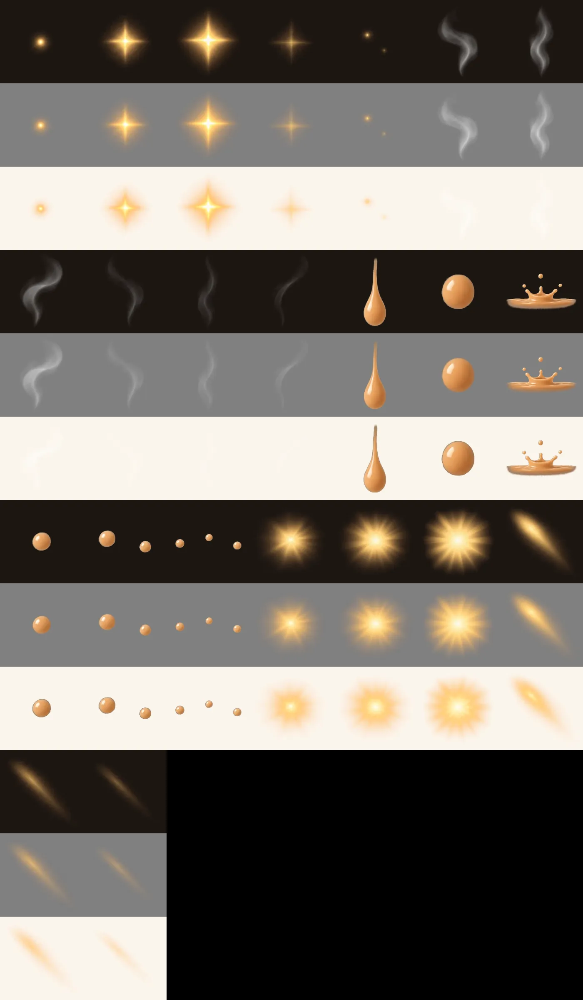

Juice lab: chai's sounds and sparkles
Nothing on this page is in the game yet. Sounds: press a button to hear it. Grey Now is what chai plays today; the letters are the choices (real recordings first, "made" is a synthesised sound). Effects: each one plays on its own and again over a real chai screenshot, with the sound you last pressed for that moment. Tell me a letter and a number for each row, e.g. "pour B, knob A, sparkle 1".
1. Sounds
Every sound is set soft, well under the family's voice (press the green button first and set the volume by it).
2. Effects on their own
They loop on their own, silently; Play replays one with its sound.
3. Over chai
Real chai screenshots (level 1, 1280 × 665) with the effects roughly where they would go. Play runs the moment with its sounds.
The cut sprites (on dark, mid-grey and light) and where the sounds come from

Sources and licences of every recorded sound: assets/shared/sfx/SOURCES.md. The plan for putting the
chosen ones into chai: build/reports/juice-lab-2026-11-06.md.